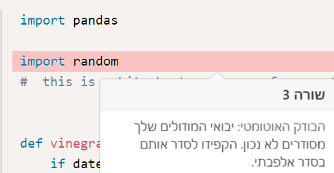

פעם אחרונה שבדקתיף P מגיע לפני R
זה קשור לזה שמדובר במודול חיצוני? מקודם זה נתן לי שגיאה שצריך להפריד שורה בין מודולים של פייתון לכאלה שלא (“יש להקפיד על שורה רווח בין מודולים מונים לבין מודולים שלא באים עם פייתון.”)
ובאופן כללי, אמרו שאפשר להשתמש בכל מודול שנמצא בתרגילים, אז לא אמור להיות בעייה עם משהו שהוא לא של פייתון נכון? (וגם איך אני יכול בקלות לדעת מה שייך לפייתון ומה לא)

Yam
בגדול הודעת השגיאה לא מספיק מפורטת.
מבחינתנו כרגע אסור להשתמש ב־pandas כי היא לא מודול שבא עם פייתון
(לא תמצא אזכור שלה בתיעוד ב־docs.python.org)
orirenick
אז להעלות מחדש עם הפתרון הקודם שלי? (פתרתי ואח"כ מצאתי את pandas והחלטתי להעלות מחדש כי זה יותר קצר)
אז בכללי לפני שמגישים לבדוק שמודול שמצאנו נמצא ברשימה ההיא (או שמספיק תכלס להסתמך על זה שהבודק האוטומטי יעיר לנו במקרה שזה מודול חיצוני שצריך להפריד שורה ואם זה לא קרה אז זה בסדר)
Yam
עדיף לבדוק ב־docs שהמודול נכלל שם. הבודק האוטומטי העיר לך על זה בגלל שיש סדר מסוים למודולים חיצוניים.
וכן, עדיף להעלות מחדש עם הפתרון הקודם
maya
אני פתרתי את התרגיל עם pandas. האם אני צריכה לפתור שוב?
ואם זה בסדר (בתקווה) - האם אני צריכה להקשיב להערות של הבודק האוטומטי (רווחים בין import-ים שונים ושינוי הסדר) כמו שנשאל כאן?
zurikarat
נראה לי שכן.
ביקשו שלייבא אותם לפי סדר מילוני…
האם זה יפגע בקוד? לא, אבל גם אם לא תשימי רווח אחרי פסיק לא יפגע בקוד…
Yam
יש צורך לפתור שוב
ניתן להשתמש רק במודולים שבאים עם פייתון (כאלו שמופיעים ב¯docs)